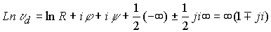
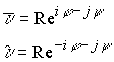
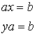
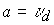

|
В. И. ЕЛИСЕЕВ ВВЕДЕНИЕ В МЕТОДЫ ТЕОРИИ
ФУНКЦИЙ ПРОСТРАНСТВЕННОГО КОМПЛЕКСНОГО ПЕРЕМЕННОГО |
|
10.5. Исследование реализации основной теоремы алгебры
Рассмотрим многочлен второй степени (квадратный трехчлен) с действительными коэффициентами
дискриминант этого многочлена равен
Возможны три варианта: 1)
, корни многочлена комплексные
Корни многочлена с действительными коэффициентами принадлежат комплексной плоскости
Корни
первого разложения на множители являются корнями второго разложения на множители
Аналогично корни
второго разложения являются корнями первого разложения, так как тоже приводят к произведению делителей нуля.2). , корни действительные
корни принадлежат действительной области чисел.
3)  , корни пространственные
, корни пространственные
Квадратный трехчлен разлагается на два равноценных варианта
Если любой из корней первого разложения (действительные корни) подставить во второе выражение, будем иметь
Аналогичный результат будем иметь и при подстановке
или в первое разложениеТаким образом, действительные корни
Удовлетворяют обоим вариантам разложения. Разложения равноценны.
Если не фиксировать к какой области принадлежит дискриминант, то необходимо рассмотреть произведение линейных множителей типа
В этом случае коэффициенты квадратного трехчлена будут пространственно комплексные.Корни этого квадратного трехчлена выразятся
Квадратное уравнение будет иметь второе равноценное разложение
Перестановка корней из одного разложения в другое приводит к произведению делителей нуля.
Например
(
Преобразования показывают, наличие двух равноценных разложений не зависит от того к какой области чисел принадлежит дискриминант.
Основная теорема алгебры доказывает: Всякий многочлен степени
с действительными или комплексными коэффициентами имеет по крайней мере один корень.При этом многочлен
будет иметь разложение видагде
числа
являются действительными.В пространстве чисел
, как было показано выше, квадратный трехчлен может быть разложен по двум равноценным вариантам. Произведение двух линейных множителей представляет квадратный трехчлен, который также может быть разложен по двум вариантам. Перебор возможных комбинаций произведений двух линейных множителей из разложения многочлена степениЛюбой корень обращает в ноль эти многочисленные варианты разложения многочлена, так как всегда будет равен нулю один из множителей, либо произведение двух линейных множителей как произведение делителей нуля.
Ноль определен в тривиальном случае как начало координат в любом пространстве. Кроме того пространство чисел определяет ноль как произведение делителей нуля, принадлежащих пространству изолированной оси.
Нахождение корня многочлена из условия равенства нулю одного из линейных множителей его разложения, либо из условия равенства нулю произведения двух линейных множителей не имеет значения. Варианты равноценны.
Открытый и исследованный вариант расширения комплексных чисел является единственно возможным логическим построением величин, удовлетворяющих тем требованиям, которые естественно предъявить к числам.
Числа, включая делители нуля, подчиняются законам операций действительных и комплексных чисел. Выполнение операции сложения и вычитания естественно не вызывает сомнения.
Рассмотрим выполнения операции умножения и деления.
Целесообразно рассмотреть эти операции, когда числа представлены в виде
Произведение
(при умножении модули перемножаются, аргументы складываются).Деление
(модули делятся, аргументы вычитаются).Делить на делители нуля нельзя, так же как делить на нуль. Необходимо различать терминологию:
"делить нельзя" и "разделить нельзя". Алгебра без деления имеет элементы на которые разделить нельзя.Для делителей нуля формально имеем
-бесконечный делитель.делитель нуля представим в общем виде
, из которого следует что для него выполняются все алгебраические операции, свойственные комплексным числам.Например.
Так как, не нарушая законов операций комплексного анализа можно записать
, то имеем
.
Логарифм делителя нуля равен бесконечному делителю. С точностью до коэффициентов выполняются законы операций действительного и комплексного поля чисел.
В связи с этим пространство комплексных чисел есть поле чисел даже при наличии делителей нуля.
Комплексное пространственное число имеет двойную сопряженность
 ( вместо скобки надо понимать двойную черту)
Теорема доказана.
Разработанный вариант алгебры является коммутативным кольцом, так как согласно Алгебре Б.Л.ван дер Варден, все элементы этой алгебры подчиняются законам обычных действительных и комплексных чисел:
Законы сложения:
Закон ассоциативности:
Закон коммутативности:
Разрешимости уравнения:
для всехЗаконы умножения:
Закон ассоциативности:
Закон коммутативности:
Законы дистрибутивности:
Эти законы выполняются для всех элементов алгебры, в том числе и делителей нуля.
Уравнения
 разрешимы при , где -делитель нуля. Поэтому кольцо является телом. Однако установленные свойства делителей нуля позволяют заключить о наличии в теле делителей нуля.В алгебре доказывается, что если
, то умножая на получим .Это неверно, ибо если , тоРазработанная алгебраическая система обладает свойством бесконечного расширения полей. Причем каждое расширение является алгебраически замкнутым, ибо любой многочлен в конкретном
N –мерном поле разлагается на линейные множители, или каждый отличный от константы многочлен из поля обладает хоть одним корнем, т.е. хоть одним линейным множителем.Необходимо подчеркнуть особое важное свойство числового поля, которое не отмечается в исследованиях современных алгебр. Функции, определенные в поле числовых алгебр, являются функциями одного переменного.
Мини оглавление:
[0], [1.1.1, 1.1.2, 1.1.3, 1.1.4, 1.1.5, 1.1.6, 1.1.7, 1.1.8, 1.2, 1.2.1, 1.2.2, 1.2.2.a, 1.2.2.b, 1.2.2.c, 1.2.2.d, 1.2.2.e, 1.2.2.f, 1.2.2.g, 1.2.2.h, 1.2.3, 1.3.1, 1.3.2, 1.3.3, 1.3.4, 1.3.5, 1.3.6, 1.4.1, 1.4.2, 1.5, 1.6, 1.7.1, 1.7.2, 1.7.3.1, 1.7.3.2, 1.7.3.3, 1.7.4.1, 1.7.4.2, 1.8.1], [2.1, 2.2],[3.1, 3.2, 3.3, 3.4.1, 3.4.2, 3.4.3, 3.4.4, 3.4.5],[4.1, 4.2, 4.3, 4.4],[5.1, 5.1.Рис.52, 5.2, 5.3, 5.4, 5.4.Т1, 5.4.Т2, 5.4.Т3, 5.5.1, 5.5.2, 5.5.3, 5.5.4],[6.1.1, 6.1.2, 6.2.1, 6.2.2, 6.2.3, 6.2.4, 6.2.5, 6.3, 6.4.1, 6.4.2, 6.5.1, 6.5.2],[7.1, 7.2, 7.3, 7.4, 7.5, 7.6, 7.7.1, 7.7.2, 7.8.1, 7.8.2, 7.8.3, 7.9],[8.1, 8.2.1, 8.2.2, 8.3, 8.4, 8.5, 8.6, 8.6.T1, 8.7, 8.8.1, 8.8.2, 8.8.3, 8.9.1, 8.9.2, 8.9.3, 8.10, 8.10.T2, 8.10.T3],[9.1, 9.2, 9.3, Рис.88, 89, 90, 91, 92, 93, 94, 95, 96, 97, 98, 99, 100],[10.1, 10.2, 10.3, 10.4, 10.5, 10.6, 10.7, 10.8, 10.9, 10.10, 10.11, 10.12, 10.13, 10.14, 10.15.1, 10.15.2, 10.16.1, 10.16.2, 10.17, 10.18],[11]
Размещенный материал является электронной версией книги: © В.И.Елисеев, "Введение в методы теории функций пространственного комплексного переменного", изданной Центром научно-технического творчества молодежи Алгоритм. - М.:, НИАТ. - 1990. Шифр Д7-90/83308. в каталоге Государственной публичной научно-технической библиотеки. Сайт действует с 10 августа 1998.
E-mail: mathsru@gmail.com